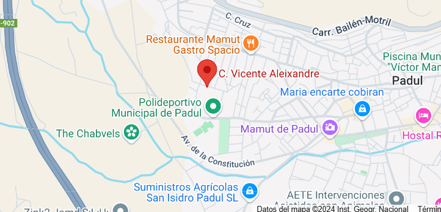

Donde encontrarnos
Historia de la empresa
En 2024, dos amigos granadinos, Miguel y Adrián, decidieron fundar su propia empresa de diseño web. Ambos compartían una gran pasión por el diseño digital y, aunque habían trabajado en distintos proyectos freelance, soñaban con hacer algo propio. Empezaron desde cero, trabajando desde casa y reuniéndose en pequeñas cafeterías de Granada para dar forma a sus ideas. Los primeros meses fueron complicados: las horas eran largas y los ingresos escasos, pero no perdieron la motivación. Finalmente, uno de sus primeros proyectos, la página web de un pequeño hotel local, se viralizó por su diseño innovador y amigable, recibiendo elogios en redes sociales. Gracias a ese proyecto, comenzaron a recibir encargos de otros negocios de la región, permitiéndoles alquilar su propio espacio de trabajo. Su historia se ha convertido en un ejemplo para otros jóvenes creativos, mostrando que con esfuerzo y dedicación es posible convertir una pasión en un proyecto exitoso.